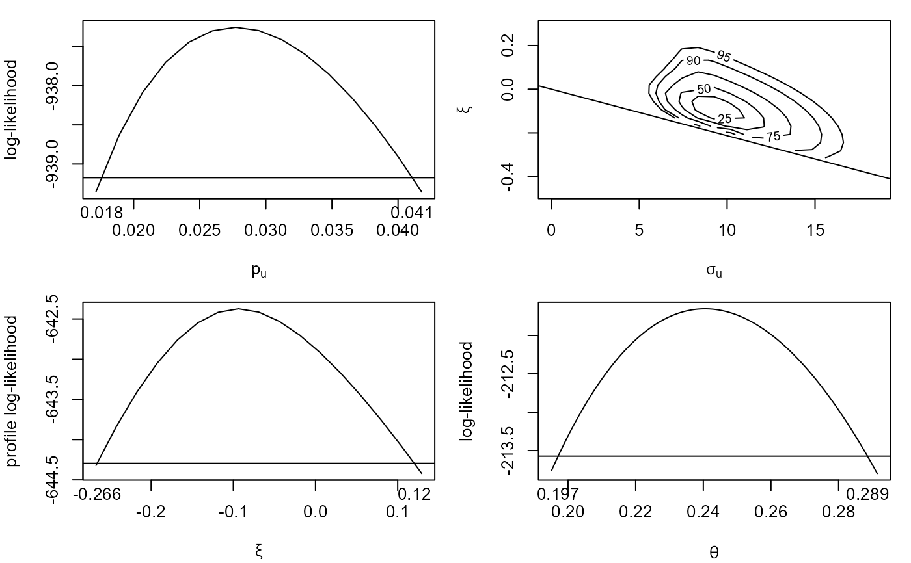
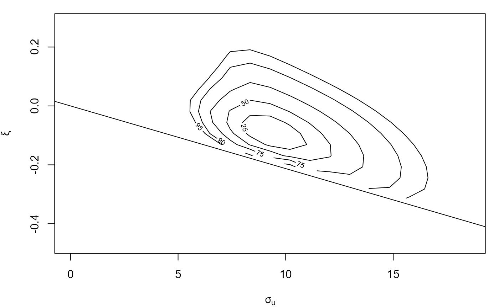

Performs threshold-based frequentist inference for 3 aspects of stationary time series extremes: the probability that the threshold is exceeded, the marginal distribution of threshold excesses and the extent of clustering of extremes, as summarised by the extremal index.
Arguments
- data
A numeric vector or numeric matrix of raw data. If
datais a matrix then the log-likelihood is constructed as the sum of (independent) contributions from different columns. A common situation is where each column relates to a different year.If
datacontains missing values thensplit_by_NAsis used to divide the data further into sequences of non-missing values, stored in different columns in a matrix. Again, the log-likelihood is constructed as a sum of contributions from different columns.- u
A numeric scalar. The extreme value threshold applied to the data. See Details for information about choosing
u.- cluster
This argument is used to set the argument
clustertomeatCL, which calculates the matrix \(V\) passed as the argumentVtoadjust_loglik. Ifdatais a matrix andclusteris missing thenclusteris set so that data in different columns are in different clusters. Ifdatais a vector andclusteris missing then cluster is set so that each observation forms its own cluster.If
clusteris supplied then it must have the same structure asdata: ifdatais a matrix thenclustermust be a matrix with the same dimensions asdataand ifdatais a vector thenclustermust be a vector of the same length asdata. Each entry inclustersets the cluster of the corresponding component ofdata.- k, inc_cens
Arguments passed to
kgaps.ksets the value of the run parameter \(K\) in the \(K\)-gaps model for the extremal index.inc_censdetermines whether contributions from right-censored inter-exceedance times are used. See Details for information about choosingk.- ny
A numeric scalar. The (mean) number of observations per year. Setting this appropriately is important when making inferences about return levels, using
returnLevel, butnyis not used byfliteso it need not be supplied now. Ifnyis supplied toflitethen it is stored for use byreturnLevel. Alternatively,nycan be supplied in a later call toreturnLevel. Ifnyis supplied to bothfliteandreturnLevelthen the value supplied toreturnLevelwill take precedence, with no warning given.- ...
Further arguments to be passed to the function
meatCLin the sandwich package. In particular, the clustering adjustment argumentcadjustmay make a difference if the number of clusters is not large.
Value
An object of class c("flite", "lite", "chandwich").
This object is a function with 2 arguments:
pars, a numeric vector of length 4 to supply the value of the parameter vector (\(p\)u, \(\sigma\)u, \(\xi\), \(\theta\)),type, a character scalar specifying the type of adjustment made to the independence log-likelihood in parts 1 and 2, one of"vertical","none","cholesky", or"spectral". For details see Chandler and Bate (2007). The default is"vertical"for the reason given in the description of the argumentadj_typeinplot.flite.
The object also has the attributes "Bernoulli", "gp",
"theta", which provide the fitted model objects returned from
adjust_loglik (for "Bernoulli" and
"gp") and kgaps (for "theta").
The named input arguments are returned in a list as the attribute
inputs. If ny was not supplied then its value is NA.
The call to flite is provided in the attribute "call".
Objects inheriting from class "flite" have coef,
logLik, nobs, plot, summary, vcov
and confint methods. See fliteMethods.
returnLevel can be used to make frequentist inferences about
return levels.
Details
There are 3 independent parts to the inference, all performed using maximum likelihood estimation.
A Bernoulli(\(p\)u) model for whether a given observation exceeds the threshold \(u\).
A generalised Pareto, GP(\(\sigma\)u, \(\xi\)), model for the marginal distribution of threshold excesses.
The \(K\)-gaps model for the extremal index \(\theta\).
The general approach follows Fawcett and Walshaw (2012).
For parts 1 and 2, inferences based on a mis-specified independence
log-likelihood are adjusted to account for clustering in the data. Here,
we follow Chandler and Bate (2007) to estimate adjusted log-likelihood
functions for \(p\)u
and for (\(\sigma\)u,
\(\xi\)), with the
argument cluster defining the clusters. This aspect of the
calculations is performed using the adjust_loglik
in the chandwich package (Northrop and Chandler,
2021). The GP distribution initial fit of the GP distribution to threshold
excesses is performed using the grimshaw_gp_mle
function in the revdbayes package
(Northrop, 2020).
In part 3, the methodology described in Suveges and Davison (2010) is
implemented using the exdex package
(Northrop and Christodoulides, 2022).
Two tuning parameters need to be chosen: a threshold \(u\) and the
\(K\)-gaps run parameter \(K\). The exdex
package has a function choose_uk to inform this
choice.
Each part of the inference produces a log-likelihood function (adjusted for parts 1 and 2). These log-likelihoods are combined (summed) to form a log-likelihood function for the parameter vector (\(p\)u, \(\sigma\)u, \(\xi\), \(\theta\)). Return levels are a function of these parameters and therefore inferences for return levels can be based on this log-likelihood.
References
Chandler, R. E. and Bate, S. (2007). Inference for clustered. data using the independence loglikelihood. Biometrika, 94(1), 167-183. doi:10.1093/biomet/asm015
Fawcett, L. and Walshaw, D. (2012), Estimating return levels from serially dependent extremes. Environmetrics, 23, 272-283. doi:10.1002/env.2133
Northrop, P. J. and Chandler, R. E. (2021). chandwich: Chandler-Bate Sandwich Loglikelihood Adjustment. R package version 1.1.5. https://CRAN.R-project.org/package=chandwich.
Northrop, P. J. and Christodoulides, C. (2022). exdex: Estimation of the Extremal Index. R package version 1.1.1. https://CRAN.R-project.org/package=exdex/.
Northrop, P. J. (2020). revdbayes: Ratio-of-Uniforms Sampling for Bayesian Extreme Value Analysis. R package version 1.3.9. https://paulnorthrop.github.io/revdbayes/
Suveges, M. and Davison, A. C. (2010) Model misspecification in peaks over threshold analysis, Annals of Applied Statistics, 4(1), 203-221. doi:10.1214/09-AOAS292
See also
fliteMethods, including plotting (adjusted)
log-likelihoods for
(\(p\)u,
\(\sigma\)u,
\(\xi\), \(\theta\)).
returnLevel to make frequentist inferences about
return levels.
blite for Bayesian threshold-based inference
for time series extremes.
Bernoulli for maximum likelihood inference for the
Bernoulli distribution.
generalisedPareto for maximum likelihood inference
for the generalised Pareto distribution.
kgaps for maximum likelihood inference from
the \(K\)-gaps model for the extremal index.
choose_uk to inform the choice of the
threshold \(u\) and run parameter \(K\).
Examples
### Cheeseboro wind gusts
# Make inferences
cdata <- exdex::cheeseboro
# Each column of the matrix cdata corresponds to data from a different year
# flite() sets cluster automatically to correspond to column (year)
cfit <- flite(cdata, u = 45, k = 3)
summary(cfit)
#>
#> Call:
#> flite(data = cdata, u = 45, k = 3)
#>
#> Estimate Std. Error
#> p[u] 0.02771 0.005988
#> sigma[u] 9.27400 2.071000
#> xi -0.09368 0.084250
#> theta 0.24050 0.023360
# 2 ways to find the maximised log-likelihood value
cfit(coef(cfit))
#> [1] -1791.28
logLik(cfit)
#> 'log Lik.' -1791.28 (df=4)
# Plots of (adjusted) log-likelihoods
plot(cfit)
#> Waiting for profiling to be done...
#> Waiting for profiling to be done...
#> Waiting for profiling to be done...

plot(cfit, which = "gp")
#> Waiting for profiling to be done...

## Confidence intervals
# Based on an adjusted profile log-likelihood
confint(cfit)
#> Waiting for profiling to be done...
#> Waiting for profiling to be done...
#> Waiting for profiling to be done...
#> 2.5% 97.5%
#> pu 0.01758135 0.04107051
#> sigmau 6.11637816 14.69866203
#> xi -0.26574658 0.12007715
#> theta 0.19707488 0.28853513
# Symmetric intervals based on large sample normality
confint(cfit, profile = FALSE)
#> 2.5% 97.5%
#> pu 0.0159747 0.03944569
#> sigmau 5.2143559 13.33351127
#> xi -0.2588087 0.07145532
#> theta 0.1946896 0.28627628